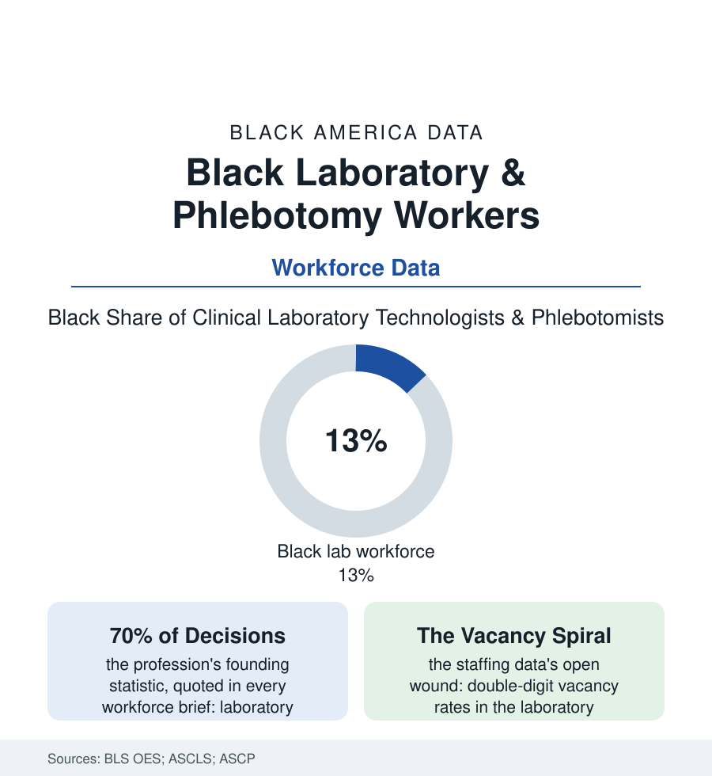

Black Employment
The Lab File: Black Workers in Phlebotomy and the Clinical Laboratory
Every diagnosis in this atlas passed through a tube, a slide, or a spin — handled by the laboratory workforce, medicine's largest invisible profession. The lab file.

The physician gets the diagnosis's credit; the laboratory produced it. Behind every number in the health section — every hemoglobin, every culture, every pathology verdict — stands a workforce of phlebotomists, technicians, and clinical scientists processing billions of tests a year in near-total professional invisibility, its Black membership substantial at the bench and thin at the directorship. This article reads the lab file.
The Draw and the Bench
The occupation's two doors stand at opposite ends of the credential ladder, and this population crowds both. The phlebotomist's door is the workforce's widest low gate — a certificate in weeks, the draw chair as the hospital's most intimate workstation (the needle's diplomacy its own skill: the hard stick, the terrified child, the elder whose veins the chemotherapy file has spent — the experienced phlebotomist's reputation traveling the wards like a surgeon's, by name), its wages at the service file's floor and its injury and exposure rows in the safety data accordingly. The bench door climbs by degree: the technician's associate and the scientist's bachelor's, the ASCP certification as the profession's passport, the specialties stratifying by bench (the blood bank's grave deliberations, microbiology's plates, chemistry's analyzers running the night panels) toward the laboratory directorships whose demographics the workforce surveys record at the profession's whitest — the supervisory gradient this section has traced in every uniform. The work's modern shape is the automation paradox in white coats: the great analyzers absorbing the routine volume while the exceptions — the critical values, the mismatched types, the specimens the machine flags — concentrate the human judgment the profession is increasingly hired for, its staffing nonetheless cut to the analyzer's theoretical pace in the productivity data, the vacancy spiral (double-digit unfilled rates in the ASCP surveys, the training programs' closures in the university data, the retirement cliff of the baby-boom technologists) making the laboratory the hospital's quietest staffing emergency — felt by the patient only as the result that takes a day instead of an hour, at the exact moment the diagnosis cannot wait.
The Pipeline Through the Hospital's Basement
The blood itself has one more file here: the donor center's workforce of the gift file — the collection staffs and the bloodmobile crews, a phlebotomy workforce whose donor rooms sit in the churches and campuses of the donation drives — drawing the community whose rare types the matching mathematics needs most, a recruitment conducted one vein at a time by workers who share the donors' neighborhoods and, not infrequently, their blood types.
The profession's recruitment problem is substantially a visibility problem, and its geography gives this population a particular claim: the laboratory's training programs sit in the community colleges and the HBCU health-science schools of the education file (the medical laboratory programs whose cohorts are among the most Black in the allied-health data, the hospital-based programs of the safety-net institutions training their own neighborhoods' daughters into the one department that never closes), its professional association's diversity data showing the membership diversifying from the bench upward at the generational pace. The pandemic wrote the file's public chapter: the testing surge making the laboratory briefly visible — the swabs' mountain processed by the same skeleton crews, the supply chain's swab-and-reagent famines administered from the basement, the profession's spokespeople explaining, to a suddenly attentive nation, that a test is not a result until a laboratorian says so — and the attention's half-life, in the subsequent budget data, measuring in months. The file's closing datum is the one the profession leads with, and it has earned it: the laboratory's few percent of the health dollar steering the large majority of its decisions, its errors and excellences propagating through every other file of this atlas in silence. Who staffs it — credentialed at which tier, supervised toward which ceiling, recruited from which schools — is therefore not a niche workforce question. It is the quality control of the entire health section, drawn, spun, and read by the people of this file.
Reading the Lab Data
The lab file is the employment section's basement, which is to say its foundation: the results every other professional quotes, produced by the professionals nobody quotes. The BLS counts the occupation. The critical value phoned up at 3 a.m. — and the steady hand that drew, spun, and verified it — counts the rest.
More in Black Employment
The Black Unemployment Rate: The Two-to-One Pattern
Black unemployment runs at roughly twice the White rate — 5.5 percent against 3.3 percent in annual averages — a ratio stable across five decades of federal data. How it is measured and why it persists.
Black Median Weekly Earnings: The 80-Cent Ratio
Black full-time workers earn a median of about $900 a week — roughly 80 cents for every dollar White workers earn. The BLS earnings data by group, gender, and occupation.
Black Labor Force Participation: Working at National Rates
Black labor force participation runs at roughly the national rate — and Black women participate at higher rates than White women. The BLS participation data.
Source: U.S. Bureau of Labor Statistics Occupational Employment Statistics; American Society for Clinical Laboratory Science workforce surveys; ASCP vacancy and certification data.